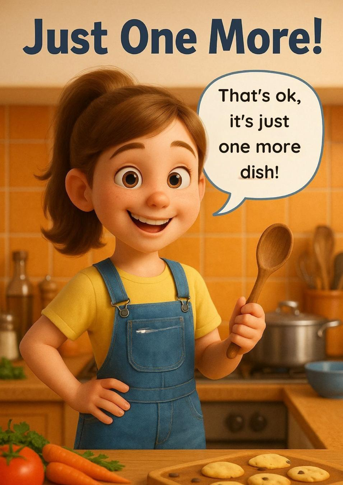
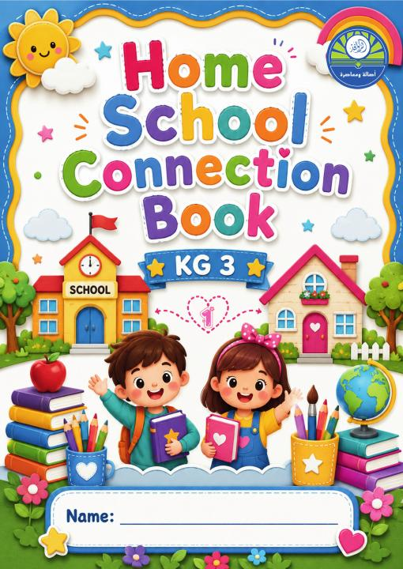

Just One More!
Sally loves to cook. With each new dish, her refrain grows a little funnier and the pile in the sink grows a little higher.
Read the opening pagesAuthor · Educator · Learning designer
I bring 38 years of classroom experience to children’s books and English-learning websites. My work starts with what a student needs to do next.

Selected work · SpeakUp Middle · Grades 7–9
A student finishes a speaking mission. Their teacher hears something worth practising. How does the student get another turn when the mission has already disappeared?
Step through the teacher and student views in this interactive example.
My design decision Reopen only the flagged mission for that student. Save the next recording as a separate attempt so the teacher can compare both and the student keeps their original feedback.
Books & classroom materials
Sally loves to cook. With each new dish, her refrain grows a little funnier and the pile in the sink grows a little higher.
Read the opening pages
Family workbook · KG3An 84-page collection for families to use alongside kindergarten learning.
Read the sample spreadWritten by Fatima Farhat, with contributions from Dr. Amal Farhat and preschool teacher Sarah Salla.
Just One More! · Written by Fatima Farhat
Inside Home School Connection · KG3
First, children trace capital M and lowercase m. On the facing page, they meet the same letter in four illustrated words: mail, monkey, milk, and map. Select a page to read it at full size.
About Fatima
“What does this student need to do next?”
That question shapes my work as an English coordinator, teacher mentor, author, and UX designer in Lebanon. Across 38 years in education, I’ve worked with learners from kindergarten through secondary school.
I design around the moments I see in class: a child ready to retell a story, a student who needs another try at a recording, or a parent looking for a clear way to help at home.